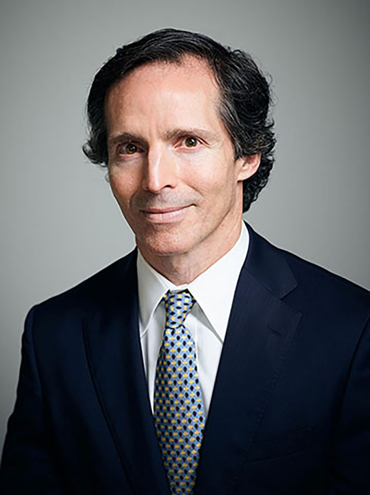
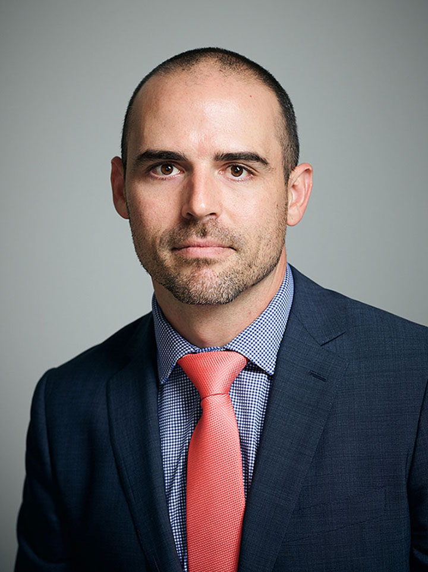
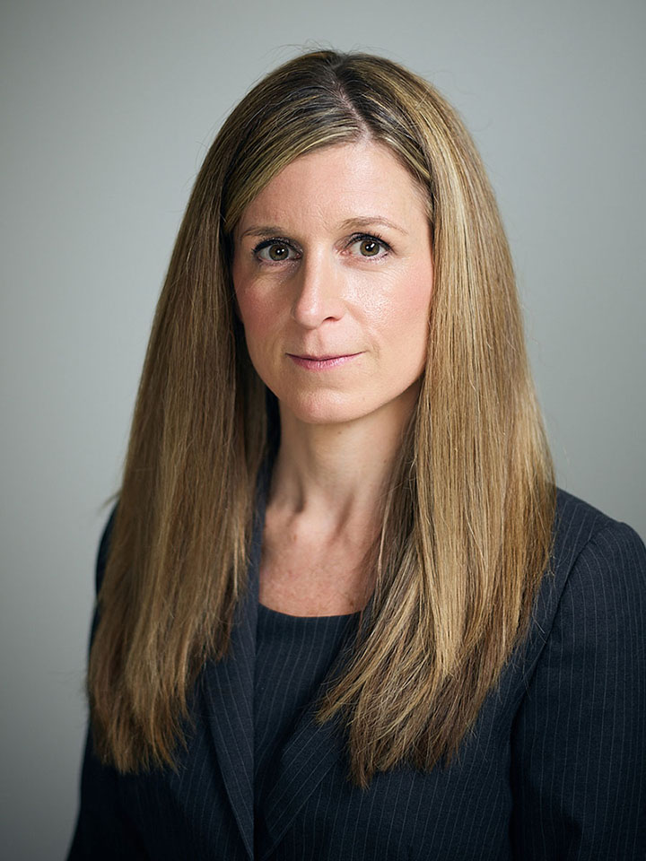
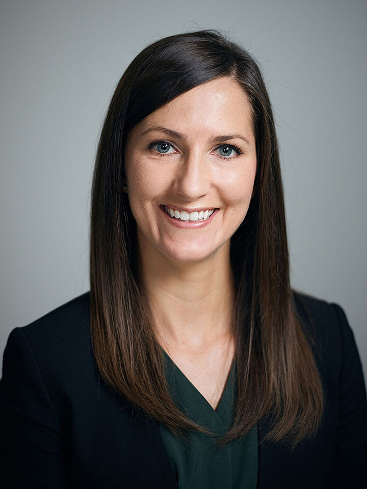
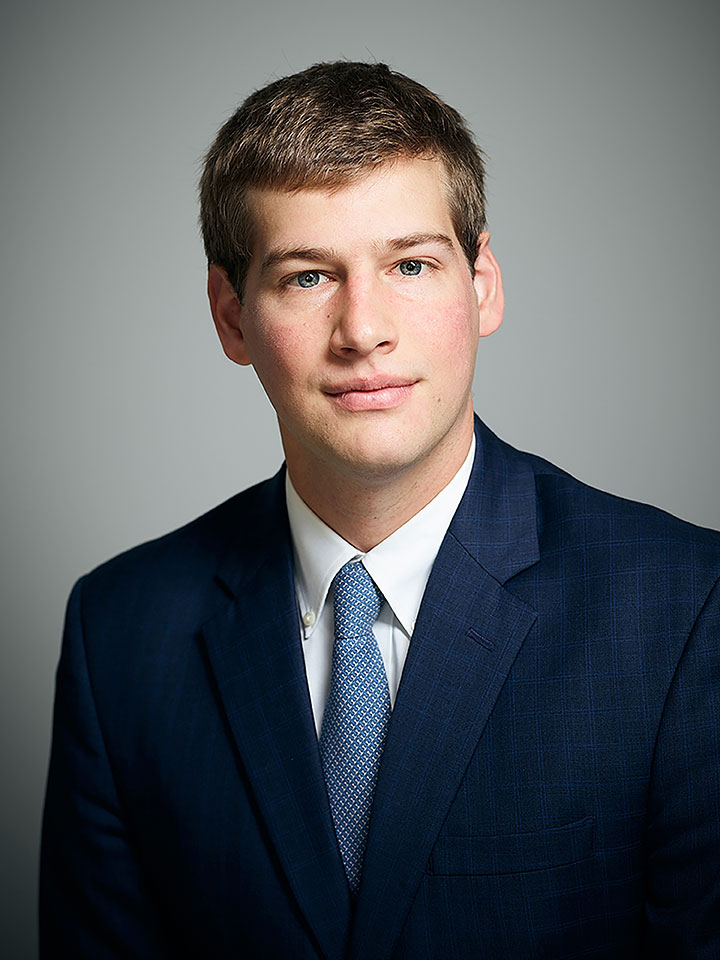
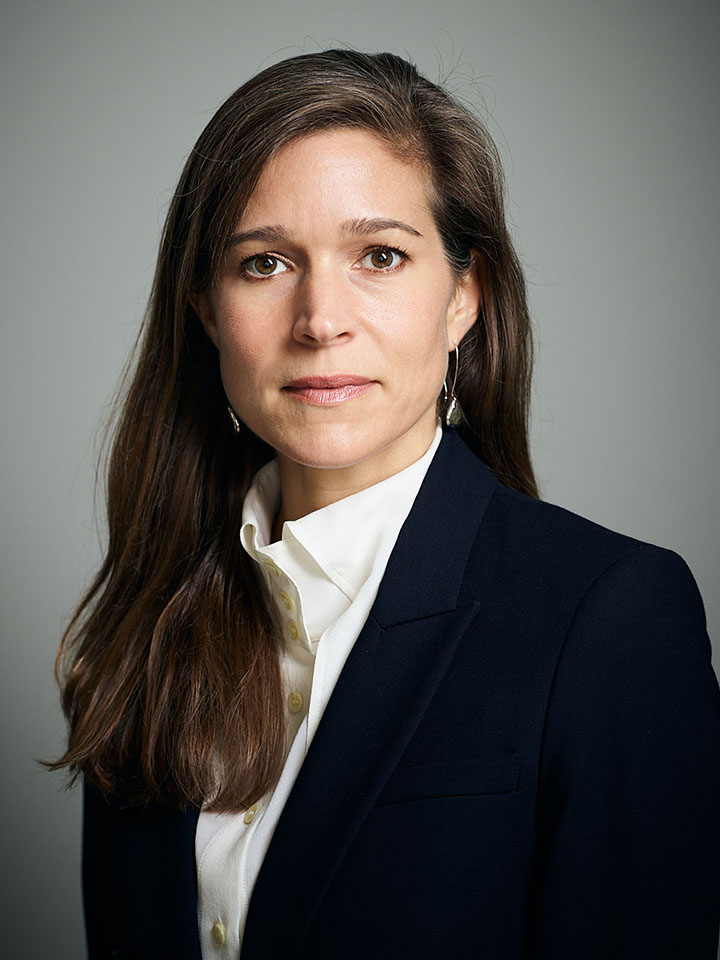
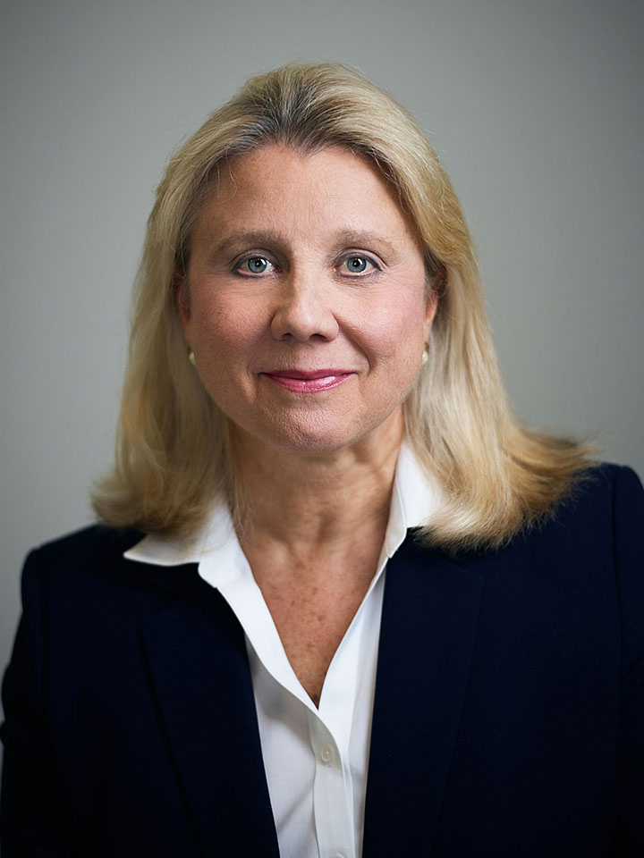

Senior Investment Professionals
-
Mark Mahoney | President and Chief Investment Officer
Mark Mahoney
President and Chief Investment Officer
Mark Mahoney founded Gulf Stream Asset Management in March 2002, which managed up to $4.7B of AUM in 12 cash flow structures prior to its sale to Apollo Global Management in 2011. Prior to Gulf Stream, Mr. Mahoney was Executive Vice President and Head of Capital Markets for Wachovia Securities. His responsibilities included Loan Syndications and Trading, Asset Securitization, Derivatives, Foreign Exchange, Fixed Income Sales and Trading, Merchant Banking, Mergers and Acquisitions, Institutional Equity Sales and Research, Soft Dollar Brokerage Business, and Private Placements. Mr. Mahoney chaired all major commitments committees for Capital Markets.
Prior to joining Wachovia, Mr. Mahoney established First Union Institutional Debt Management (“IDM”), which became the second largest CLO portfolio manager by the beginning of 2001 with over $3.5B of assets under management. IDM completed seven transactions as cash flow arbitrage vehicles, primarily involving senior loans, and continued its growth until becoming the foundation of Barings Loan Management through a sale to Mass Mutual.
Prior to founding First Union Institutional Debt Management in August 1998, Mr. Mahoney served as Head of First Union’s Investment Banking Group, responsible for the creation and management of Corporate Finance, Investment Grade Debt, Loan Syndications and Trading, High Yield, Private Finance—Debt and Equity, Mergers & Acquisitions, and Asset Securitization. Mr. Mahoney joined First Union in 1992 as Senior Vice President and Managing Director of Specialized Industries, a division of the Corporate Banking Group and served as a member of First Union’s Senior Executive Management Committee.
Mr. Mahoney graduated from The Lawrenceville School and holds a B.A. in History from Duke University, which preceded his 41 years of corporate and investment banking experience. He has served on numerous Boards including: Duke University, Green Dot Bioplastics – Chairman, Mint Museum of Charlotte, YMCA, Charlotte Arts and Science Council and Nyaka AIDS Orphans Project.
-
William Farr IV, CFA | Senior Portfolio Manager
William Farr IV, CFA
Senior Portfolio ManagerWill Farr previously worked at Steele Creek beginning at its inception in 2013, serving as a key member of the credit portfolio management and research team. He was instrumental in designing and implementing the firm’s credit platform. Will managed credit exposures for industries including financial services, insurance, chemicals, energy, metals & mining and industrials. Will’s credit portfolio included over $750MM in syndicated loan investments across 6 CLOs and other investment vehicles out of the firm’s total $3B of AUM.
Prior to joining Steele Creek, Will worked for CommunityOne Bank as a portfolio manager in the Special Assets Division, evaluating non-performing loan portfolios; recommending and implementing strategies for value maximization; and providing Board level updates on the portfolio.
Previously Will served for 6 years as a senior credit analyst and distressed portfolio manager for Gulf Stream Asset Management until its sale to Apollo in 2011. He spearheaded efforts to grow the firm’s loan investments in technology, software and business services, and financial services, managing over 60 investments in the firm’s greater than $4.7B AUM of CLO and separate accounts.
Will graduated from Davidson College with an A.B. in Economics and earned his CFA charter in 2000.
-
Paul Caruso | Head of Trading
Paul Caruso
Head of TradingPaul Caruso was a Fixed Income Trader at TIAA, a global financial services firm with nearly $1T of AUM across public equites and fixed income, private markets, real estate, and alternative investments. He was directly responsible for trading leveraged loans and bonds across multiple mandates which totaled more than $20B in assets. This diverse set of portfolios included insurance accounts, mutual funds, and multiple CLOs. Prior to 2015, Paul was a Senior Financial Analyst at Baker & Taylor before becoming the Manager of International Business Development with particular focus on the UK and Australia.
Paul joined Gulf Stream Asset Management in 2008 as a Research Associate with responsibilities including the analysis and monitoring of over 100 companies representing $730MM of AUM. Sectors included: Lodging, Gaming, Entertainment, Retail, Consumer Products, Real Estate, Building Products, and Chemicals.
Paul graduated cum laude from Radford University with a double major in Finance and Economics.
-
William J. Taylor II, CFA | CCO/Senior Research Analyst
William J. Taylor II, CFA
CCO/Senior Research Analyst
William Taylor served as Director and Head of the Credit Investment Portfolio for Corporate and Investment Banking at SunTrust. He managed the bank’s term loan B portfolio with responsibility for the underwriting, monitoring, compliance and corporate governance functions. Additionally as Head of CDS portfolio hedging, he oversaw the implementation of strategies pertaining to the bank’s large exposures.
William was a founding member of Gulf Stream Asset Management and was instrumental in building its research platform as a Senior Research Analyst and subject matter expert responsible for paper and packaging, automotive, and manufacturing industries. With over 22 years of industry experience, he has held the Chartered Financial Analyst (“CFA”) designation for over 15 years.
William earned his B.B.A. in Finance from the University of Georgia. He is a co-founder and ongoing supporter of the University of Georgia Dan Mack Graduate Support Fund and is an avid cyclist.
-
Dorothy Barbee | Senior Research Analyst
Dorothy Barbee
Senior Research AnalystDorothy Barbee most recently spent 8 years at TIAA as a Senior Director and Research Analyst with a focus on leveraged loans and high yield credit. Her coverage included the Healthcare and Business Services sectors. As a senior member of the research team, Dorothy was responsible for managing over $1B of investments across numerous investment vehicles with a spectrum of investment guidelines and risk appetites. While at TIAA Dorothy was instrumental in building the firm’s CLO platform from inception to 4 CLO’s with over $1.8B of AUM.
Prior to joining TIAA Dorothy was a Research Analyst at Neuberger Berman (via LightPoint Capital Management) for 6 years, covering investments in both the investment grade and non-investment grade credit markets. Leading up to Neuberger Berman’s acquisition of LightPoint, she supported the growth of LightPoint’s CLO platform from less than $1B to over $3B of AUM and spent time in London building out the firm’s European presence. Her career foundation was built during 4 years at JP Morgan, where she went through the bank’s credit training program and spent time working in multiple departments, including the bank’s distressed credit division.
Dorothy earned her MBA in Finance and Accounting from the Kellogg School of Management at Northwestern University in 2009 and a B.S. in Business and Finance from Miami of Ohio in 2001.
-
Robert C. (Butch) Mayer, Jr. | Senior Research Analyst
Robert C. (Butch) Mayer, Jr.
Senior Research AnalystButch Mayer joined U.S. Bank in 2011 as Senior Portfolio Manager for the Wholesale Banking Division, with focus on large corporate accounts in the Southeast and Northeast. Industry focus included financial services and defense contractors with responsibility for credit analysis focused on initial assessment, underwriting, presentation for credit approval and ongoing credit monitoring. Accomplishments included approval for credit requests over $500MM and various highly leveraged transactions that included multiple agent titles.
In 2005, Butch joined Gulf Stream Asset Management as a Senior Research Analyst with industry expertise and coverage responsibilities for Consumer Products, Retail, Insurance, and Food & Beverage. With an extensive credit and workout background, the firm utilized his experience on the analysis of stressed and distressed credits. Previously he was a Director with First Union National Bank where he managed credit portfolios for the insurance industry group. Responsibilities included client management, credit analysis, product assessment, loan structuring and team management. Prior to that, Butch worked for InterFirst Bank, N.A., assigned to the Southwest Group handling middle market borrowers as well as the bank's Workout Group, restructuring credits for both national and regional accounts.
Butch earned a B.S. in Business Administration from Louisiana State University.
-
Kathleen LaVielle | Senior Research Analyst
Kathleen LaVielle
Senior Research AnalystKathleen LaVielle worked as the Director of Financial Planning and Analysis for Baker & Taylor (subsidiary of Follett Corporation - $3.6B of revenues) in Charlotte, NC, where she led all corporate financial reporting for the core retail and library business units. She was responsible for annual budgeting and strategic planning which included restructuring, modeling and M&A analysis.
Kathleen was a Research Associate for Gulf Stream Asset Management from May 2007- Oct 2011 working with the portfolio management team to underwrite primary and secondary corporate credit investments, maintain industry knowledge, and perform comparative relative value analysis. She was responsible for covering over 100 corporate credits with focus on Healthcare, Pharmaceuticals, Business Services, Financial Services and Software. She was instrumental in the development of the junior analysts and developed proprietary tools to improve the monitoring of all portfolio credits.
Kathleen earned a B.S. in Finance in 2005 from The Ohio State University.
-
Jonathan Treloar | Research Analyst
Jonathan Treloar
Research Analyst
Jonathan Treloar joins Gulf Stream as a Credit Research Analyst from 40|86 Advisors (Asset Management Subsidiary of CNO Financial Group in Carmel, Ind.). He covered the Utility and Payment sectors focusing on underwriting, credit monitoring, and presenting credit analysis of leveraged loans, high yield, and investment grade issuance in the primary and secondary market. He was responsible for 70+ issuers and over $1B AUM. In addition to his fundamental role, he has created several models to improve the monitoring of company financials, providing sensitivity analysis and forecasting credit metrics. Jonathan passed all three levels of the CFA Program on his first attempt and may be awarded the charter upon completion of the required work experience.
Jonathan graduated from Butler University’s Lacy School of Business with a double major in Finance and Management Information Systems.
-
Daniel Chubb | Research Analyst
Daniel Chubb
Research AnalystDaniel Chubb joins the firm after spending two years as an investment banking analyst in the Debt Capital Markets group at Fifth Third Securities with a focus on TMT, retail, fitness, and solar sectors. In that capacity, he performed fundamental credit analysis utilizing comparable transactions, cash flow modeling, relative value, loan market research, and prudent risk management methodologies to evaluate prospective lending opportunities. Notable accomplishments include arrangement of $185M Senior Secured Credit Facilities for Planet Fitness and $100M for a national renewable energy company with 60+ solar projects across 11 states. He has previous experience in loan syndications at Alliance Partners.
Daniel graduated from Wake Forest University’s School of Business with a B.S. in Finance.
-
David Acton | Research Analyst
David Acton
Research AnalystDavid Acton joins Gulf Stream as a Portfolio Analyst from 0|86 Advisors (Asset Management Subsidiary of CNO Financial Group in Carmel, Ind.). He was part of a team that managed five CLOs totaling over $1.5B and was responsible for building and maintaining a $300M CLO bond portfolio. In addition to these fundamental roles, he created models to assess risk adjusted return on capital and expected loss risk. Prior to his experience at 40|86, David worked at Bank of America as a Global Operations Analyst. He has passed the CFA Level I and Level II examinations and is currently a Level III candidate.
David graduated from Purdue University’s Krannert School of Management with a triple major in Finance, Economics, and Industrial Management.
-
Elizabeth Edwards | Chief Operating Officer/Investor Relations
Elizabeth Edwards
Chief Operating Officer/Investor RelationsElizabeth Edwards joins the firm as Chief Operating Officer to augment all major processes. She is instrumental in establishing all protocols regarding technology, compliance, administration and marketing. With particular strengths in branding, presentations, website content, and investor relations, Elizabeth joins us from her prior role as a successful COO building a commercial printing business in Charlotte, while further capitalizing on her experiences as an analyst at Bank of America and those gained while founding an independent marketing firm.
Elizabeth recently completed Harvard Business School Online with High Honors. She graduated cum laude with an A.B. in Economics from The University of the South in Sewanee, TN.
-
Sheila Kirkpatrick | Chief Financial and Information Officer
Sheila Kirkpatrick
Chief Financial and Information OfficerSheila Kirkpatrick was the Chief Financial Officer for Green Dot Bioplastics LLC from 2010 - 2012 and Gulf Stream Residuals LLC during the past 8 years. Responsibilities included comprehensive forecasting, funds management, and tax reporting.
In 2002, Sheila was instrumental as a founding member of Gulf Stream Asset Management while serving as the Chief Financial Officer, Chief Operating Officer and Head of Investor Relations. She was responsible for all aspects of the firm’s financial formation, human resources, and administration. She developed comprehensive reporting for internal, external and auditing requirements including: financial statements, annual / quarterly LP reports, operating budgets, cash flow analysis, compliance reporting, investor database, office polices / administration, website design and updates, and assisted with potential acquisition projects.
Prior to joining Gulf Stream, Sheila was a founding member of Institutional Debt Management (“IDM”) as its CFO and COO beginning in 1998. The firm grew to over $3.5B of AUM by 2001 through the issuance of 7 CLO structures and established a preeminent reputation with the world’s leading global investors. IDM became Barings Asset Management, as part of a sale from First Union to Mass Mutual, and currently manages over $20B of US corporate credit.